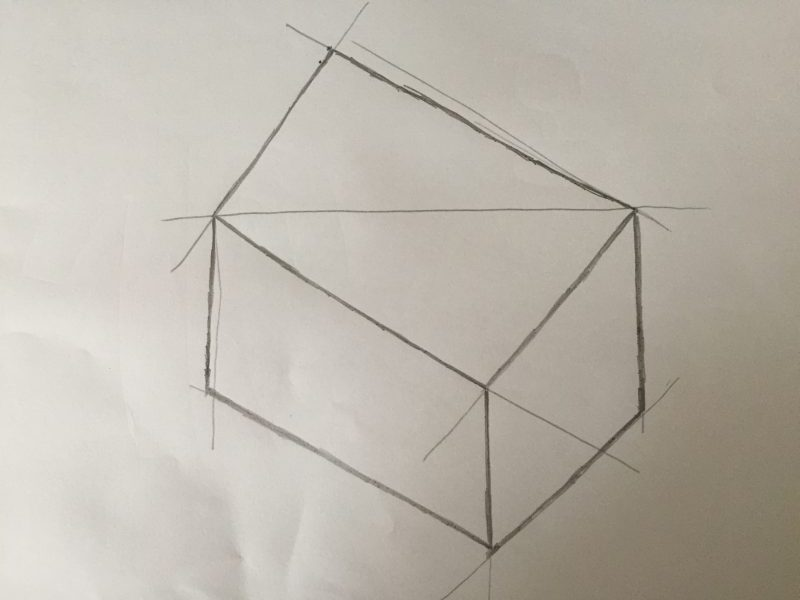
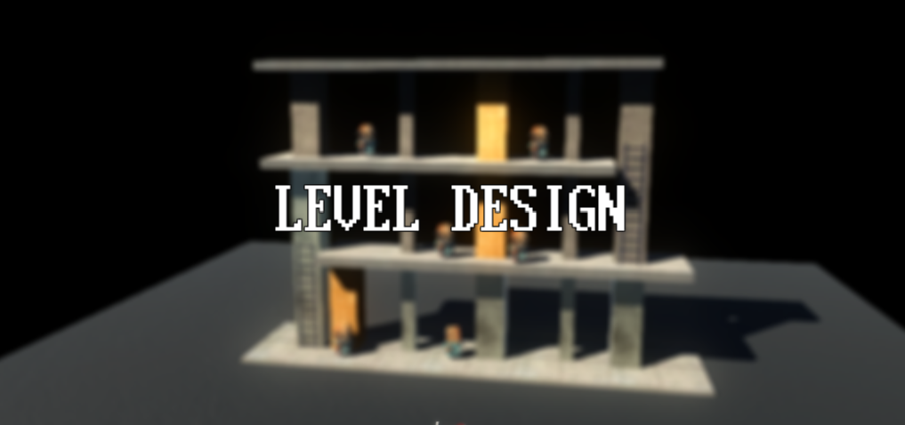

News
-
大西 涼 wrote a new post, 6本目:IVRCに企画書投稿と感想, on the site 白井研セミナー 2年 12か月前
どーも皆さんこんにちは，大西です．
今回はIVRCに企画書を投稿して見えてきた今後の自分の課題と感想について書こうと思います．
まず企画書を描いてみて思ったのは，企画書を描くこと自体，初めての挑戦だったのでどんな感じに作れば良いのかと，当初は思いました。そこで，過去の受賞した作品などをみて，その上で，自分に関係のある作品を作ろうと思いました，なので企画書では柔道を取り上げた作品の制作をしたのですが，作っていく中で自分が知ら[…]

-
黒澤優輝 wrote a new post, レビュー & レビュー, on the site 白井研セミナー 2年 12か月前
こんにちは(-.-)
今回は企画案と個人的にためになった技術書のレビューについてです。
企画案について
IVRCというコンテストには企画書の提出が必須なので、その案についてレビューしました。
やってみた感想としては他の人がどんなことを考えているのか見られる機会だったので楽しかったです。
レビューをして他の案の足りないところを見つけることにより、自分の企画案のここも直した方がいいのではないかと思ったり、また、レビ[…]

-
近藤 優生 wrote a new post, IVRC企画書提出に向けて, on the site 白井研セミナー 2年 12か月前
どうもこんにちは。近藤です。
日付も変わってしまっているので昨日にはなりますがIVRCへの企画書提出が終わりましたね。私は自分で企画を立てて進行する能力が欠けているので山本くんの企画に相乗りさせていただく形になりました。まさかこんなところで私の剣道歴15年が生きてくるとは思ってもいませんでした。まさに「経験が生きた」ということなのでしょう。企画へのアドバイスや、山本くんと相談したりして詰めた結果、企画が目指すものへの共[…]

-
大西 涼 wrote a new post, 3本目:図形のスケッチと人の書き方, on the site 白井研セミナー 2年 12か月前
どーもこんにちは今回で3本目の投稿になります。
今回のセミナーでは図形のスケッチの基礎と人のスケッチの基礎を行いました。
まず初めの画像はDODOcaseVRを見て描いたものですが，見たものを忠実に書くことの難しさを感じ自分の画力不足からあまり上手く書くことができませんでした。
2枚目と3枚目の画像は白井先生に直方体や円柱の書き方を教えてもらって描いたもので最初にDODOcaseVRを描いたものと比べると影の付[…]

-
大西 涼 wrote a new post, 2本目:IVRC調査＆自分が作りたいもの #IVRC, on the site 白井研セミナー 2年 12か月前
すどーも大西です．
ブログの投稿のこれで2本目になりました。
だんだん暖かくなってきてましたね．
体調管理はしっかりとしましょう．
今回はIVRCで自分が気になった作品と自分がこんなのを作りたいなと思った物を紹介します。
まずは1つ目2015年 「長野県松本工業高等学校/JUMRAIⅦ」さんの「Golden Frying O・Ma・Ru」です．
・ハンドル操作や重心移動などによってインタラクティブにスピードや方[…]

-
石井雄大 wrote a new post, Part.2 IVRC調査をしてみて, on the site 白井研セミナー 2年 12か月前
こんにちは。石井です。セミナーでIVRCについての調査、発表をしてみて
感じたことや、感化された作品についてまとめようと思います。
まずIVRCの話に入る前に各々の発表について感じたことがあります。
自分は今までプレゼンテーションを作る際に全体の見やすさ、
文字の大きさを重視していました。
細かい文字などは投影したとき遠くの人が見えなかったり、
プレゼンテーションとして言葉にインパクトを与えるのが
難しいと考[…]
-
石井雄大 wrote a new post, Part.3 「絵が下手だね」と先生が言ったから5月17日はスケッチ記念日, on the site 白井研セミナー 2年 12か月前
こんにちは。石井です。セミナーの時間に、皆の画力が
ないということでスケッチを勉強することになりました。
スケッチの仕方を実際に習ってみて感じたことや変化をまとめたいと思います。
この日の朝、自分は小田急線で起きた人身事故の影響で大学になかなかたどり着けず
やっとついた！と思ったら皆が無言でお絵かきをしていたので、
(どうしよう…すげぇ状況聞きづらい・・・)と思いつつも
恐る恐る状況を聞いて、スケッチの日である[…]

-
中村 凌雅 wrote a new post, Part7 #IVRC 締め切り間近!!前日夜の研究室キャンプ #今日の東田さん （中村凌雅）, on the site 白井研セミナー 2年 12か月前
こんにちは。中村です。
6月16日 17:00 .
IVRC2017の締切期限です。
今回は締[…]

-
中村 凌雅 wrote a new post, Part6 響きが可愛いKotlin勉強会（中村凌雅）, on the site 白井研セミナー 3年前
こんにちは。中村です。
前回の記事でお金が無くなるみたいなことを書きました。
調子に乗って次回予告をしましたが…
アルバイトと、誕生日が近いため親からお金が入りました。
今月は余裕で生きそうです。
さて、6月11日は日本Androidの会 学生部でKotlinの勉強会を行いました。
Kotlinは2011年の夏に開発された新しいプログラム言語です。
2017年5月18日にGoogleがKotlinをAndr[…]

-
Rex HSIEH wrote a new post, TechShopとTokyo VR Startup, on the site Rex's Japan Adventure 3年前
皆さん、久しぶりです。最近に私はとてもにぎやかだったり、たくさんイベントと見学があったり、新しいのブログを書く時間がありませんでした。すみません。今回のブログはその2つイベントについて書きます。
先週の木曜日に私と同じ研究室の東田茉莉花はTechShop Japanのワークショップに参加するために東京都へ行きました。TechShopは本来に2006年にアメリカのカリフォルニア州のメンロパークで開所しました。今まで世界中 […]

-
武藏島 雄理 wrote a new post, 3番：画力は説明力も基礎力は地道な努力_武藏島雄理, on the site 白井研セミナー 3年前
こんにちは。高校まで絵を描くことが大嫌いで避けていた武藏島です。
よろしくおねがいします。
今回のセミナーではぺライチ企画書の発表でした。
企画の説明をする際には文章だけでは足らず、スケッチなどを使ってビジュアル的に提示する必要があります。
しかし、私たちには説明に使用するようなスケッチを描くような技量がなかったようで、急きょスケッチ講座が始まりました。
初めに直線を何度も引いて格子状にするという一見基本[…]

-
-
-
中村 凌雅 wrote a new post, Part5 気が付くとお金がなくなっている話（中村凌雅）, on the site 白井研セミナー 3年前
こんにちわ。中村です。
ブログを見た友達に指摘をされたのですが、本来は、「こんにちは」だそうですね。
今日は、お日柄もよく～といった文章が語源となっているらしいです。
改めまして、こんにちは。
最近のセミナーでは、IVRC2017に向けて企画のレビュー大会などをやっています。
めんと向かって意見を言えない私も、紙に直接指摘を書くことで、素直な意見を出せている気がします。
締め切りまで2週間を切っています。[…]
-
大西 涼 wrote a new post, 5本目:最近流行ってる?○○を買ってみた．, on the site 白井研セミナー 3年前
皆さんこんにちは，大西です．
今回のセミナーでは，自分達で作った企画書をレビューしあいました．
どの作品も自分では考えつかなかったので，とても興味深いものとなりました。あまり詳しくは言えませんが，人によって色々なアイデアがあるのでそれに伴い自分も負けていられないなって感じました。
もう一つは名刺の作り方を教えてもらいました。自分はまだ名刺を持っていなかったのでこれを機会に名刺作りをやってみようと思います．
さて今回の本[…]

-
黒澤優輝 wrote a new post, 絵を描けるようになりたい！, on the site 白井研セミナー 3年前
こんにちは( ｀ー´)ノ
今回[…] 
-
山本晴貴 wrote a new post, Part4 近状報告―山本晴貴―, on the site 白井研セミナー 3年前
セミナーブログが第４回という節目を迎えました。別に節目と言える程節目でも無いのですが、履修キャンセル期間も終わり本格的に授業へ取り組み始める時期という意味ではある意味節目と言えるのではないでしょうか。
近状
今週(?)の休日は、ゲームのステージにおけるレベルデザインについて考えていました。今メインで進めているプロジェクトの基本的なコーディングを粗方終わらせてしまったので、さてステージを作るかという段階になりました。ステ[…] 
-
中村 凌雅 wrote a new post, Part4 Android Bazaar and Conference 2017 Spring #ABC2017S（中村凌雅）, on the site 白井研セミナー 3年前
みなさん、こんにちわ。中村です。
4回目の更新となります。
先日、5月28日にAndroid Bazaar and Conference 2017 Springというイベントがありました。
僕が所属している日本Androidの会 学生部（以下、学生部）もバザールに出展したので、[…]

-
大西 涼 wrote a new post, 4本目:最近のこととセミナーの事, on the site 白井研セミナー 3年前
どーもこんにちは大西です。
セミナーブログも4本目になりましたさて今回は、どんな話しましょうか。
まずは、この前のセミナーについて話したいと思います。この前のセミナーではみんなのペライチ企画書を発表会しました。皆さん前回と比べて絵のクオリティが上がっているのを感じられて、自分も少しは画力が上がったけれどまだまだだなと思いました。次は企画書の清書を書くのでこれまで以上にしっかりと書かないとなと感じましたね。
バイクで破産し[…]

-
望月 宥冶 wrote a new post, SIGGRAPHの最終投稿を終えました！！, on the site Real Baby – Real Family 3年前
SIGGRAPHの論文を書き終えました！
以下、PDF流し込み“Real Baby – Real Family” – VR Entertainment Baby Interaction System
ABSTRACT
This research, “Real Baby – Real Family” – VR Entertainment Baby
Interaction System, is a[…]
- もっと読み込む